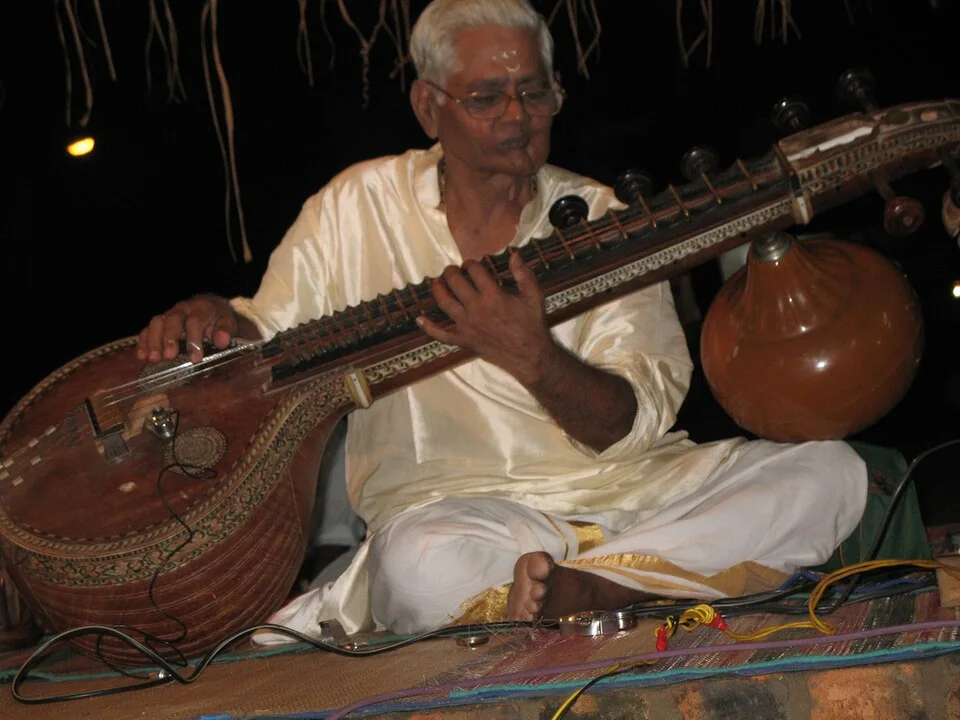

The Anatomy of Gamaka on the Saraswati Veena: How Deflection Transforms Swara into Bhava
Why does a Carnatic vainika rarely play a note straight on its fret? We examine Kampita, Nokku, Ravai, and Khandippu deflections across three octaves.